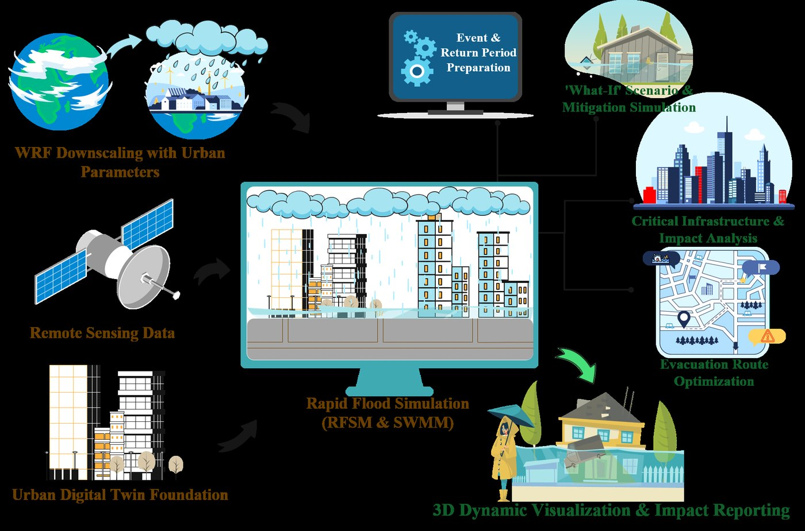
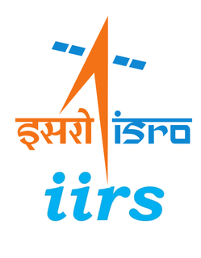
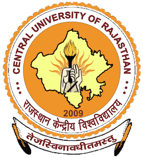

PhD Scholar · since 2025 · second year
Ankush Charavande
Ankush works on urban flooding as a forecasting problem rather than a mapping one. His doctoral research, FLOOD-TWIN, couples high-resolution rainfall prediction to rapid hydrodynamic simulation and 3D city models, so that a forecast arrives as an inundation scenario a city can act on which streets, which buildings, which evacuation routes instead of a rainfall number.
He came to IIT Roorkee from IIRS-ISRO, where his MTech work on Cyclone Dana and Cyclone Remal used numerical storm-surge modelling and multi-sensor satellite data to reconstruct coastal flooding and damage.
- Urban flooding
- Digital twin modelling
- Numerical Modelling
- Remote Sensing & GIS
- Compound flooding
- Computer vision for Earth observation
Doctoral research
FLOOD-TWIN: a comprehensive digital twin framework integrating forecasting and hydrodynamic modelling for urban flood management.
The framework runs as a chain rather than a single model. WRF downscaling with urban parameters produces the rainfall; remote sensing and an urban digital twin supply the surface the water moves across; RFSM and SWMM turn that into a rapid flood simulation; and the result comes out as a 3D dynamic visualisation with critical-infrastructure impact analysis, evacuation-route optimisation and 'what-if' mitigation scenarios attached.

Publications
Charavande, A., & Bhatt, C. M. Analysis of storm surge dynamics using numerical modelling and geospatial techniques: a case study of Cyclone Dana.
Remote Sensing Applications: Society and Environment, 42, 102048 · 10.1016/j.rsase.2026.102048
Bhatt, C. M., Charavande, A., Pandey, A., Singh, D., & Chauhan, P. Synergistic use of multi-sensor data and a decision matrix-based approach for assessing agricultural damage due to Cyclone Remal.
Journal of the Indian Society of Remote Sensing · in press · 10.1007/s12524-026-02536-5
Charavande, A., & Bhatt, C. M. Assessment of coastal compound flooding using an integrated coupled modelling and remote sensing approach.
Remote Sensing of Environment · preprint 10.21203/rs.3.rs-7751325/v1
Charavande, A., & Mohanty, M. Spatially targeted low-impact development informed by flood exposure and socioeconomic feasibility strengthens urban flood resilience.
Water Resources Research
Technical skills
Education
-
PhD, Water Resources Development and Management
Indian Institute of Technology Roorkee
2025 – present -

MTech, Remote Sensing and GIS
Indian Institute of Remote Sensing (IIRS-ISRO), Dehradun · Specialisation in Natural Hazards and Disaster Risk Management
2023 – 2025 -

Integrated MSc, Environmental Science
Central University of Rajasthan
2018 – 2023
Projects and research experience
GNSS-R for environmental hazard monitoring
Application to water resources and flood monitoring.
Optical UAV fused with airborne LiDAR
Road segmentation and pothole detection using deep learning.
SWOT-based flood modelling
Integrating hydrological and hydrodynamic modelling against SWOT observations.
SWOT-based reservoir storage estimation
Using satellite altimetry to improve hydrological model performance.
Drought frequency in Gujarat, 2000–2019
Relationship with rainfall patterns under a changing climate.
Talks, awards and recognition
- 2025
Invited talk: IIRS-ISRO Lecture Series
Optimising numerical modelling for disaster preparedness of coastal flooding.
- 2025
GATE Geomatics Engineering
All India Rank 112, score 593.
- 2024
GATE Geomatics Engineering
All India Rank 66, score 639.
- 2023
UGC NET, Environmental Science
Qualified for Assistant Professor.
- 2025
Training-HyMHECMaL
Hydrological modelling with HEC-HMS, HEC-RAS and machine learning, National Institute of Hydrology, Roorkee.
Writing and experience beyond research
- Feb 2022
COP26: expectations and challenges
JNU-ENVIS, Geodiversity & Impact on Environment.
- Jun 2021
Ecosystem restoration and the current situation in India
Opinion article, Himachal Watcher, World Environment Day.
- 2023
Assistant Environmental Officer, Fulgro Environmental & Engineering Services (I) Pvt. Ltd.
June – July 2023.